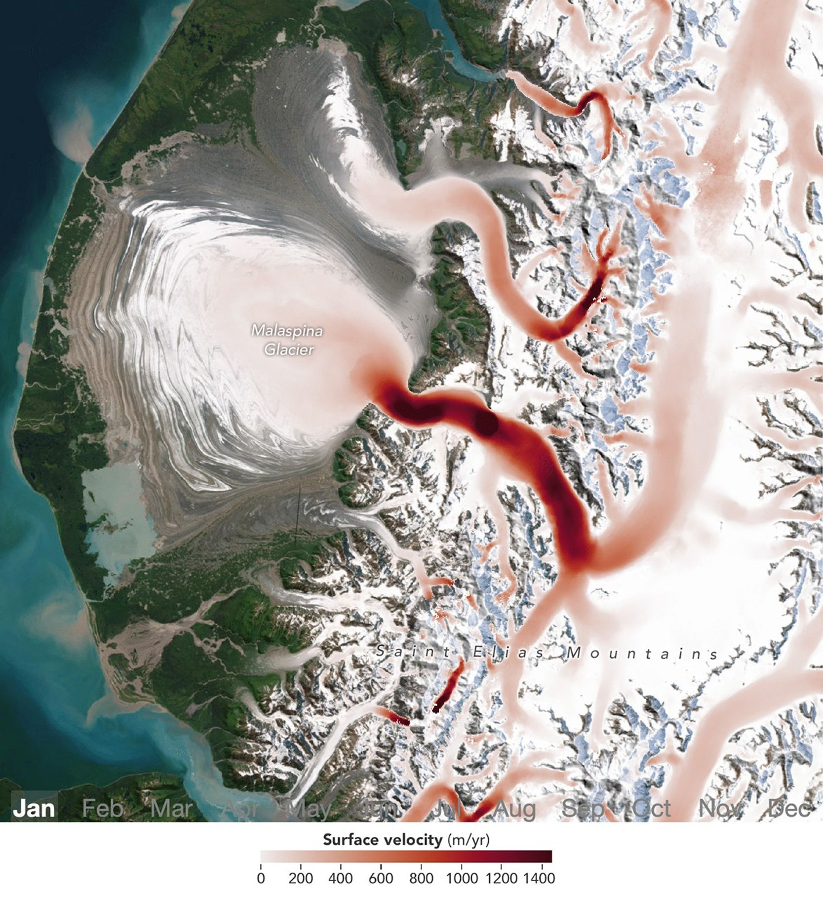

Satellites Detect Seasonal Pulses in Earth’s Glaciers
Malaspina Glacier in southeastern Alaska is the planet’s largest piedmont glacier, spilling from the Saint Elias Mountains and spreading out like pancake batter onto the coastal plain. Though it may appear static, the glacier is “alive” with movement year-round, typically speeding up in spring and slowing by winter. A new analysis by NASA scientists shows that glaciers worldwide display a wide range of seasonal movement patterns—some similar to Malaspina, others vastly different.
For decades, researchers documented seasonal speedups and slowdowns in glacier flow, usually focusing on individual glaciers or regions. By analyzing millions of optical and radar satellite images collected between 2014 and 2022, glaciologists Chad Greene and Alex Gardner at NASA’s Jet Propulsion Laboratory (JPL) mapped this variability globally. Their work, published in November 2025 in Science, reveals how glaciers in different regions respond to seasonal warming and may help identify which glaciers are most vulnerable to a warming climate.
Glacier speed is measured by tracking the motion of deep cracks called crevasses and surface debris in sequences of satellite images. Crevasse fields provide unique glacial “fingerprints” that an algorithm developed at JPL as part of the ITS_LIVE project tracks over time. This high-resolution mapping allows researchers to analyze subtle changes in glacier speed as they respond to seasonal warming.
“Earth has over 200,000 glaciers, and we’re watching all of them closely,” said Gardner, coauthor of the study. “It’s no surprise that with this much data, a pattern started to emerge.”
An animation of southeastern Alaska shows monthly ice-velocity measurements on Malaspina Glacier from January through December. Red areas indicate high ice velocities, which expand across the glacier in spring. The timing of these speedups is driven by meltwater reaching the glacier bed and reducing friction. “Glaciers are like rivers of ice flowing down mountains toward the sea,” said Greene, lead author. “When warm air melts the glacier surface, meltwater reaches the base, acts as a lubricant, and causes the glacier to speed up.”
Seasonal accelerations are strongest at high northern latitudes: in Alaska, glaciers move fastest in spring, whereas in the Arctic regions of Europe and Russia, peak speeds occur in summer or early fall.
The animation shows Malaspina picking up speed in early spring, when the first meltwater drains down crevasses to the glacier’s base. Conduits at the base are initially small, so water pressure builds and reduces friction, allowing the glacier to slide. Through late summer, as channels under the glacier enlarge, pressure drops and friction increases, slowing the flow.
Other glaciers behave differently. The Barnes Ice Cap on Baffin Island accelerates mainly in summer, while the Baltoro Glacier in Pakistan’s Karakoram range shows a gradual downslope propagation of speedups during the melting season.
Understanding these seasonal patterns helps scientists anticipate how glaciers respond to climate change. The study found that glacier flow accelerates with every degree of warming, and seasonal flow patterns are linked to longer-term glacier change. Spring and summer speedups can act as vital signs of a glacier’s resilience to prolonged warming.
“We wanted to check the health of Earth’s glaciers, so we measured their pulse,” Greene said. “Now we just need to keep an eye on their temperature.”